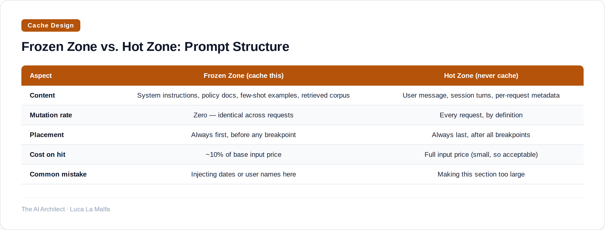
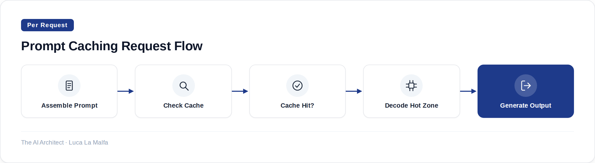

A systematic look at prompt caching mechanics, where it actually saves money, and where it quietly fails you.
November 21, 2026
Here is a number worth sitting with: on a typical RAG pipeline with a 40,000-token system prompt — legal documents, product catalogs, internal policy — you are paying to process those same tokens on every single request. If you run 10,000 requests a day, you are re-encoding that context 10,000 times. Anthropic's prompt caching charges roughly 10% of the base input price for cache hits on Claude models. That is not a marginal improvement. On a busy pipeline, it is the difference between an AI feature that pencils out and one that doesn't.
The mechanics are straightforward, which is part of why people underestimate how easy it is to get wrong. The model provider caches a prefix of your prompt — specifically, the portion up to a designated cache breakpoint. On subsequent requests, if the prefix matches exactly, you pay the cache-hit rate instead of the full input rate. The key word is exactly. Byte-for-byte. Any variation before the breakpoint — a timestamp injected into the system prompt, a user name interpolated too early, a whitespace difference — and you miss the cache entirely and pay full price anyway.
The design question, then, is not whether to use prompt caching. It is how to structure your prompts so that the stable, expensive content always sits before the variable content. Think of your prompt as two zones: the frozen zone and the hot zone. The frozen zone is everything that doesn't change per request — your system instructions, your retrieved documents, your few-shot examples. The hot zone is everything that does — the user's message, the session turn, any per-request metadata. Caching only works if you are disciplined about keeping those zones separated and in the right order.
This sounds obvious until you look at how most prompt assembly code actually works in production. Teams build prompts by concatenating strings in whatever order felt natural when the feature was first written. The user's name ends up in the system prompt header. The current date gets injected at the top for 'context'. Retrieved chunks get shuffled by relevance score, so their order changes between requests. Each of these habits silently destroys cache hit rate. I have audited pipelines where teams were convinced they had caching enabled — they did, technically — but their effective hit rate was under 5% because the frozen zone was never actually frozen.

There is a subtlety around cache TTL that most documentation glosses over. Anthropic's cache has a five-minute TTL by default — if no request hits that cached prefix within five minutes, the cache is evicted and the next request pays full price to re-populate it. For high-traffic applications this is irrelevant. For batch jobs that run once an hour, or for low-volume enterprise tools with sporadic usage, the cache may never actually be warm when you need it. In those cases, you need to think about whether a periodic 'keep-alive' request makes economic sense, or whether caching is simply the wrong tool for that traffic pattern.
Multi-turn conversations introduce another wrinkle. Each new turn extends the conversation history, which means the prefix you are caching grows with every exchange. Eventually the growing history itself becomes the expensive part — and you need to decide whether to cache the whole conversation so far, or periodically summarize and reset. Neither is obviously correct; it depends on how long your conversations run and how much context fidelity matters. The point is that caching is not a one-time configuration decision. It is an ongoing architectural concern that interacts with your conversation management strategy.

One thing I want to name plainly: prompt caching is not a substitute for prompt engineering. I have seen teams treat it as a cost escape hatch — stuff everything into a massive cached system prompt and stop thinking about what the model actually needs to see. A 100,000-token cached prompt that is 60% irrelevant content will still hurt your output quality, even if it's cheap to process. The cache hit saves you money on input tokens; it does not save you from the attention dilution of feeding the model a wall of text it has to wade through. Optimize for cost and quality, not cost alone.
How I structure caches in client work
In practice, I treat the cache breakpoint as an architectural boundary, not just a prompt detail. Before writing any prompt assembly code, I draw the frozen/hot line explicitly — usually in a comment or a schema — and enforce it in code review. On Claude, I place the cache_control breakpoint immediately after the last frozen-zone block. I also instrument cache hit rate as a metric from day one; if it drops below 80% on a high-traffic endpoint, that is a bug, not a tuning issue. The single most common fix I make in client pipelines is moving a date or user-identifier injection from the system prompt header down into the human turn where it belongs.
anthropics/claude-cookbooks — Includes worked examples of prompt caching to cut latency and cost.
Inspired by [AINews] GPT-6.2 Astra, the #2 Frontier Model is better and 20%-600% cheaper, but has mixed reviews; 6.2 Sol likely main workhorse (Latent Space)